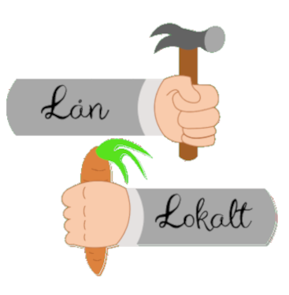

<app-header pageTitle="Start" class="ion-text-center"></app-header>

<ion-content [fullscreen]="true">
  <br />
  <div class="ion-text-center">
    
  </div>

  <br />
  
  <br />
  <br />
  <div>
    <ion-item style="margin-right: 16px" href="food">
      <ion-label>Stop madspild, giv det videre</ion-label>
      <ion-button slot="end">
        <ion-icon name="fast-food" color="second"></ion-icon>
      </ion-button>
    </ion-item>

    <ion-item style="margin-right: 16px" href="resources">
      <ion-label>Lån ressourcer fra hinanden</ion-label>
      <ion-button slot="end">
        <ion-icon name="hammer" color="second"></ion-icon>
      </ion-button>
    </ion-item>

    <ion-item style="margin-right: 16px" href="petsandplants">
      <ion-label>Hjælp med at passe planter & dyr</ion-label>
      <ion-button slot="end">
        <ion-icon name="leaf" color="second"></ion-icon>
      </ion-button>
    </ion-item>
  </div>
  <br />
  <div class="ion-text-center">
    <ion-button shape="round"  href="rules" class="ion-align-items-center .button-one-color"
      >Gør en forskel</ion-button
    >
  </div>
</ion-content>
<footer>
  <div class="ion-text-center">
    <!-- <ion-chip>
      <ion-icon name="fast-food" color="second"></ion-icon>
      <ion-label>Mad</ion-label>
    </ion-chip>
    <ion-chip>
      <ion-icon name="hammer" color="second"></ion-icon>
      <ion-label>Ressourcer</ion-label>
    </ion-chip>
    <ion-chip>
      <ion-icon name="leaf" color="second"></ion-icon>
      <ion-label>Pasning</ion-label>
    </ion-chip> -->
    <a href="https://www.flaticon.com/authors/freepik" title="Icons">
      Icons created by Freepik - Flaticon</a
    >
    <br />
  </div>
</footer>
